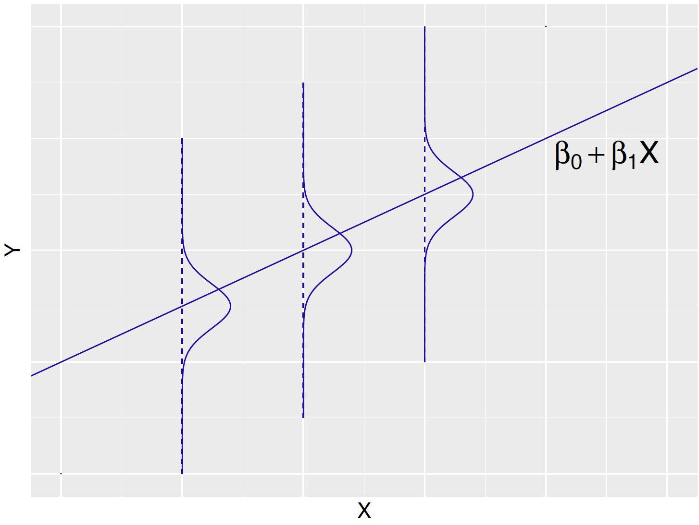
7 Simple Linear Regression
7.1 Introduction
For continuous response variables such as Roger Federer’s time-to-serve data in Chapter 8 and snowfall amounts in Buffalo, New York in Chapter 9, Normal sampling models have been applied. The basic underlying assumption in a Normal sampling model is that observations are identically and independently distributed (i.i.d.) according to a Normal density, as in \(Y_i \overset{i.i.d.}{\sim}\textrm{Normal}(\mu, \sigma)\).
Adding a predictor variable
When continuous responses are observed, it is common that other variables are recorded that may be associated with the primary response measure. In the Buffalo snowfall example, one may also observe the average temperature in winter season and one believes that the average season temperature is associated with the corresponding amount of snowfall. For the tennis example, one may believe that the time-to-serve measurement is related to the rally length of the previous point. Specifically, a long rally in the previous point may be associated with a long time-to-serve in the current point.
In Chapter 9, a Normal curve was used to model the snowfalls \(Y_1, ..., Y_n\) for \(n\) winters, \[\begin{equation} Y_i \mid \mu, \sigma \overset{i.i.d.}{\sim} \textrm{Normal}(\mu, \sigma), \, \, i = 1, \cdots, n. \label{eq:introLik1} \end{equation}\] The model in Equation (11.1) assumes that each winter snowfall follows the same Normal density with mean \(\mu\) and \(\sigma\). From a Bayesian viewpoint, one assigns prior distributions for \(\mu\) and \(\sigma\) and bases inferences about these parameters from the posterior distribution.
However when the average temperature in winter \(i\), \(x_i\), is also available, one might wonder if the snowfall amount \(Y_i\) can be explained by the average temperature \(x_i\) in the same winter. One typically calls \(x_i\) a predictor variable as one is interested in predicting the snowfall amount \(Y_i\) from the value of \(x_i\). How does one extend the basic Normal sampling model in Equation (11.1) to study the possible relationship between the average temperature and the snowfall amount?
An observation-specific mean
The model in Equation (11.1) assumes a common mean \(\mu\) for each \(Y_i\). Since one wishes to introduce a new variable \(x_i\) specific to winter \(i\), the model in Equation (11.1) is adjusted to Equation (11.2) where the common mean \(\mu\) is replaced by a winter specific mean \(\mu_i\) . \[\begin{equation} Y_i \mid \mu_i, \sigma \overset{ind}{\sim} \textrm{Normal}(\mu_i, \sigma), \, \, i = 1, \cdots, n. \label{eq:introLik2} \end{equation}\] Note that the observations \(Y_1, ..., Y_n\) are no longer identically distributed since they have different means, but the observations are still independent which is indicated by \(ind\) written over the distributed \(\sim\) symbol in the formula.
Linear relationship between the mean and the predictor
One basic approach for relating a predictor \(x_i\) and the response \(Y_i\) is to assume that the mean of \(Y_i\), \(\mu_i\), is a linear function of \(x_i\). This linear relationship is written as \[\begin{equation} \mu_i = \beta_0 + \beta_1 x_i, \label{eq:introLink} \end{equation}\] for \(i = 1, \dots, n\). In Equation (11.3), each \(x_i\) is a known constant (that is why a small letter is used for \(x\)) and \(\beta_0\) and \(\beta_1\) are unknown parameters. As one might guess, these intercept and slope parameters are random. One assigns a prior distribution to \((\beta_0, \beta_1)\) and perform inference by summarizing the posterior distribution of these parameters.
In this model, the linear function \(\beta_0 + \beta_1 x_i\) is interpreted as the expected snowfall amount when the average temperature is equal to \(x_i\). The intercept \(\beta_0\) represents the expected snowfall when the winter temperature is \(x_i = 0\). The slope parameter \(\beta_1\) gives the increase in the expected snowfall when the temperature \(x_i\) increases by one degree. It is important to note that the linear relationship in Equation (11.3) with parameters \(\beta_0\) and \(\beta_1\) describes the association between the mean \(\mu_i\) and the predictor \(x_i\). This linear relationship is a statement about the expected or average snowfall amount \(\mu_i\), not the actual snowfall amount \(Y_i\).
Linear regression model
Substituting Equation (11.3) into the model in Equation (11.2), one obtains the linear regression model. \[\begin{equation} Y_i \mid \beta_0, \beta_1, \sigma \overset{ind}{\sim} \textrm{Normal}(\beta_0 + \beta_1 x_i, \sigma), \, \, i = 1, \cdots, n. \label{eq:introLik3} \end{equation}\] This is a special case of a Normal sampling model, where the \(Y_i\) independently follow a Normal density with observation specific mean \(\beta_0 + \beta_1 x_i\) and common standard deviation \(\sigma\). Since there is only a single predictor \(x_i\), this model is commonly called the simple linear regression model.
One restates this regression model as \[\begin{equation} Y_i = \mu_i + \epsilon_i, i = 1, \cdots, n, \label{eq:introLik3a} \end{equation}\] where the mean response \(\mu_i = \beta_0 + \beta_1 x_i\) and the residuals \(\epsilon_1, ..., \epsilon_n\) are \(i.i.d.\) from a Normal distribution with mean 0 and standard deviation \(\sigma\). In the context of our example, this model says that the snowfall for a particular season \(Y_i\) is a linear function of the average season temperature \(x_i\) plus a random error \(\epsilon_i\) that is Normal with mean 0 and standard deviation \(\sigma\).
The simple linear regression model is displayed in Figure 7.1. The line in the graph represents the equation \(\beta_0 + \beta_1 x\) for the mean response \(\mu = E(Y)\). The actual response \(Y\) is equal to \(\beta_0 + \beta_1 x + \epsilon\) where the random variable \(\epsilon\) is distributed Normal with mean 0 and standard deviation \(\sigma\). The Normal curves (drawn sideways) represent the locations of the response \(Y\) for three distinct values of the predictor \(x\). The parameter \(\sigma\) represents the deviation of the response \(Y\) about the mean value \(\beta_0 + \beta_1 x\). One is interested in learning about the parameters \(\beta_0\) and \(\beta_1\) that describe the line and the standard deviation \(\sigma\) which describes the deviations of the random response about the line.
In the linear regression model, the observation \(Y_i\) is random, the predictor \(x_i\) is a fixed constant and the unknown parameters are \(\beta_0\), \(\beta_1\), and \(\sigma\). Using the Bayesian paradigm, a joint prior distribution is assigned to \((\beta_0, \beta_1, \sigma)\). After the response values \(Y_i = y_i, i = 1, ..., n\) are observed, one learns about the parameters through the posterior distribution. An MCMC algorithm will be used to simulate a posterior sample, and using the simulation sample, one makes inferences about the expected response \(\beta_0 + \beta_1 x\) for a specific value of the predictor \(x\). Also, one will be able to assess the sizes of the errors by summarizing the posterior density of the standard deviation \(\sigma\).
In our snowfall example, one is interested in learning about the relationship between the average temperature and the mean snowfall that is described by the linear model \(\mu = \beta_0 + \beta_1 x\). If the posterior probability that \(\beta_1 < 0\) is large, that indicates that lower average temperatures will likely result in larger mean snowfall. Also one is interested in using this model for prediction. If given the average winter temperature in the following season, can one predict the Buffalo snowfall? This question is addressed by use of the posterior predictive distribution of a future snowfall \(\tilde Y\). Using the usual computing strategy, one simulates a large sample of values from the posterior predictive distribution and finds an interval that contains \(\tilde Y\) with a prescribed probability.
In this chapter, regression is introduced in Section 11.2 by a dataset containing several characteristics of 24 house sales in an area in Ohio. In this example, one is interested in predicting the price of a house given the house size and Section 11.3 presents a simple linear regression model to explain this relationship. The practice of standardizing variables will be introduced which is helpful in the process of assigning an informative prior on the regression parameters. Inference through MCMC is presented in Section 11.6 and methods for performing Bayesian inferences with simple linear regression are illustrated in Section 11.7.
7.2 Example: Prices and Areas of House Sales
Zillow is an online real estate database company that collects information on 110 million homes across the United States. Data is collected from a random sample of 24 houses for sale in the Findlay, Ohio area during October 2018. For each house, the dataset contains the selling price (in $1000) and size (in 1000 square feet). Table 7.1 displays the first five observations of the dataset.
| Index | Price ($1000) | Size (1000 sq feet) |
|---|---|---|
| 1 | 167 | 1.625 |
| 2 | 236 | 1.980 |
| 3 | 355 | 2.758 |
| 4 | 148 | 1.341 |
| 5 | 93 | 1.465 |
Suppose one is interested in predicting a house’s selling price from its house size. In this example, one is treating price as the response variable and size as the single predictor. Figure 7.2 constructs a scatterplot of price (y-axis) against the size (x-axis) for the houses in the sample. This figure shows a positive relationship between the size and the price of a house sale, suggesting that the house sale price increases as the house size increases. Can one quantify this relationship through a Bayesian linear regression model? In particular, is there sufficient evidence that there is a positive association among the population of all homes? Can one predict the sale price of a home given its size?
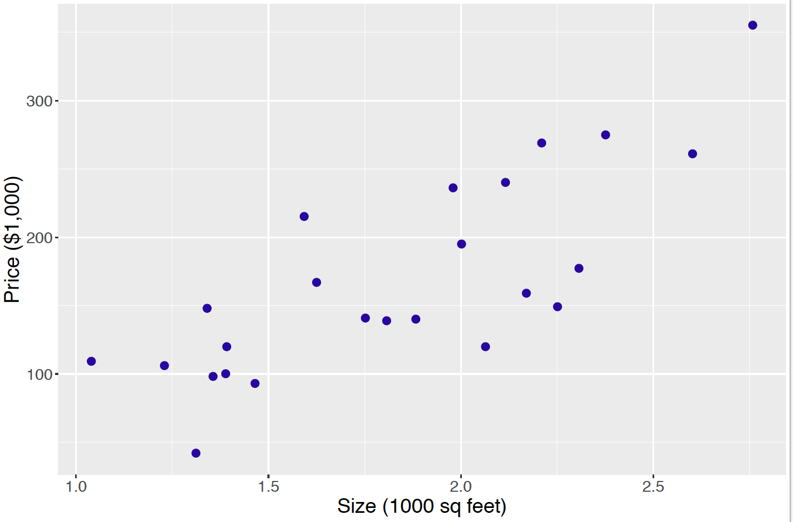
7.3 A Simple Linear Regression Model
The house sale example can be fit into the linear regression model framework. It is assumed the response variable, the price of a house sale, is a continuous variable is distributed as a Normal random variable. Specifically, the price \(Y_i\) for house \(i\), is Normally distributed with mean \(\mu_i\) and standard deviation \(\sigma\). \[\begin{equation} Y_i \mid \mu_i, \sigma \overset{ind}{\sim} \textrm{Normal}(\mu_i, \sigma), \label{eq:modelLik1} \end{equation}\] where \(i = 1, \cdots, n\), where \(n = 24\) is the number of homes in the dataset. The \(ind\) over \(\sim\) in Equation (11.6) indicates that each response \(Y_i\) independently follows its own Normal density. Moreover, unlike the house-specific mean \(\mu_i\), a common standard deviation \(\sigma\) is shared among all responses \(Y_i\)’s.
Since one believes the size of the house is helpful in understanding a house’s price,
one represents the mean price \(\mu_i\) as a linear function of the house size \(x_i\) depending on two parameters \(\beta_0\) and \(\beta_1\).
\[\begin{equation} \mu_i = \beta_0 + \beta_1 x_i \label{eq:modelLink} \end{equation}\]
How does one interpret the intercept and slope parameters? The intercept \(\beta_0\) gives the expected price \(\mu_i\) for a house \(i\) that has zero square feet (\(x_i = 0\)). This is not a meaningful parameter since no house (not even a tiny house) has zero square feet. The slope parameter \(\beta_1\) gives the change in the expected price \(\mu_i\), when the size \(x_i\) of house \(i\) increases by 1 unit, i.e., increases by 1000 square feet.
7.4 A Weakly Informative Prior
In some situations, the user has limited prior information about the location of the regression parameters or the standard deviation. To implement the Bayesian approach, one has to assign a prior distribution, but it is desirable in this situation to assign a prior that has little impact on the posterior distribution.
Suppose that one’s beliefs about the regression coefficients \((\beta_0, \beta_1)\) are independent from one’s opinion about the standard deviation \(\sigma\). Then the joint prior density for the parameters \((\beta_0, \beta_1, \sigma)\) is written as \[\begin{equation*} \pi(\beta_0, \beta_1, \sigma) = \pi(\beta_0, \beta_1) \pi(\sigma). \end{equation*}\] The choice of weakly informative priors on \((\beta_0, \beta_1)\) and \(\sigma\) are described in separate sections.
Prior on the intercept \(\beta_0\) and slope \(\beta_1\)
If one assumes independence of one’s opinion about the intercept and the slope, one represents the joint prior \(\pi(\beta_0, \beta_1)\) as the product of priors \(\pi(\beta_0) \pi(\beta_1)\), and it is convenient to use Normal priors. So it is assumed \(\beta_0 \sim \textrm{Normal}(\mu_0, s_0)\) and \(\beta_1 \sim \textrm{Normal}(\mu_1, s_1)\).
The choice of the standard deviation \(s_j\) in the Normal prior reflects how confident the person believes in a prior guess of \(\beta_j\). If one has little information about the location of a regression parameter, then the choice of the prior guess \(\mu_j\) is not that important and one chooses a large value for the prior standard deviation \(s_j\). So the regression intercept and slope are each assigned a Normal prior with a mean of 0 and standard deviation equal to the large value of 100.
Prior on sampling standard deviation \(\sigma\)
In the current regression model, one assumes that \(Y_i \sim \textrm{Normal}(\beta_0 + \beta_1 x_i, \sigma)\) and \(\sigma\) represents the variability of the house price about the regression line. It is typically hard to specify informative beliefs about a standard deviation than a mean parameter such as \(\beta_0 + \beta_1 x\). So following the suggestions from Chapter 9 and Chapter 10, one assigns a weakly informative prior for the standard deviation \(\sigma\). A Gamma prior for the precision parameter \(\phi = 1/\sigma^2\) with small values of the shape and rate parameters, say \(a = 1\) and \(b = 1\), was seen in those chapters to represent weak prior information, and a similar prior is assigned in this regression setting. \[\begin{equation*} \phi = 1/\sigma^2 \sim \textrm{Gamma}(1, 1). \end{equation*}\]
7.5 Posterior Analysis
In the sampling model one has that \(Y_1, ..., Y_n\) are independent with \(Y_i \sim \textrm{Normal}(\beta_0 + \beta_1 x_i, \sigma)\). Suppose the pairs \((x_1, y_1), ..., (x_n, y_n)\) are observed. The likelihood is the joint density of these observations viewed as a function of \((\beta_0, \beta_1, \sigma)\). For convenience, the standard deviation \(\sigma\) is reexpressed as the precision \(\phi = 1 / \sigma^2\).
\[\begin{eqnarray} L(\beta_0, \beta_1, \phi) &= & \prod_{i=1}^n \left[\frac{\sqrt{\phi}}{\sqrt{2 \pi}} \exp\left\{-\frac{\phi}{2}(y_i - \beta_0 - \beta_1 x_i)^2\right\}\right] \nonumber \\ & \propto & \phi^{\frac{n}{2}} \exp\left\{-\frac{\phi}{2}\sum_{i=1}^n (y_i - \beta_0 - \beta_1 x_i)^2\right\} \end{eqnarray}\]
By multiplying the likelihood by the prior for \((\beta_0, \beta_1, \phi)\), one obtains an expression for the posterior density. \[\begin{eqnarray} \pi(\beta_0, \beta_1, \phi \mid y_1, \cdots, y_n) &\propto & \phi^{\frac{n}{2}} \exp\left\{-\frac{\phi}{2}\sum_{i=1}^n (y_i - \beta_0 - \beta_1 x_i)^2\right\} \nonumber \\ & \times & \exp\left\{-\frac{1}{2 s_0^2}(\beta_0 - \mu_0)^2\right\} \exp\left\{-\frac{1}{2 s_1^2}(\beta_1 - \mu_1)^2\right\} \nonumber \\ & \times & \phi^{a-1} \exp(-b \phi) \end{eqnarray}\] Since this is not a familiar probability distribution, one needs to use an MCMC algorithm to obtain simulated draws from the posterior.
7.6 Inference through MCMC
It is convenient to draw an MCMC sample from a regression model using the JAGS software. One attractive feature of JAGS is that it is straightforward to transpose the statement of the Bayesian model (sampling density and prior) directly to the JAGS model script.
Describe the model by a script
The first step in using JAGS is writing the following script defining the linear regression model, saving the script in the character string modelString.
Code
modelString <-"
model {
## sampling
for (i in 1:N){
y[i] ~ dnorm(beta0 + beta1*x[i], invsigma2)
}
## priors
beta0 ~ dnorm(mu0, g0)
beta1 ~ dnorm(mu1, g1)
invsigma2 ~ dgamma(a, b)
sigma <- sqrt(pow(invsigma2, -1))
}"In the sampling section of the script, the loop goes from 1 to N, where N is the number of observations with index i. Recall that the Normal distribution dnorm in JAGS is stated in terms of the mean and precision, and so the variable invsigma2 corresponds to the Normal sampling precision. The variable sigma is defined in the prior section of the script so one can track the simulated values of the standard deviation \(\sigma\). Also the variables g0 and g1 correspond to the precisions of the Normal prior densities for beta0 and beta1.
Define the data and prior parameters
The next step is to provide the observed data and the values for the prior parameters. In the R script below, a list the_data contains the vector of sale prices, the vector of house sizes, and the number of observations. This list also contains the means and precisions of the Normal priors for beta0 and beta1, and the values of the two parameters a and b of the Gamma prior for invsigma2. The prior standard deviations of the Normal priors on beta0 and beta1 are both 100, and so the corresponding precision values of g0 and g1 are both \(1/100^2 = 0.0001\).
y <- PriceAreaData$price
x <- PriceAreaData$newsize
N <- length(y)
the_data <- list("y" = y, "x" = x, "N" = N,
"mu0" = 0, "g0" = 0.0001,
"mu1" = 0, "g1" = 0.0001,
"a" = 1, "b" = 1)Generate samples from the posterior distribution
The run.jags() \index{run.jags()} function in therunjagspackage\index{runjags R package} generates posterior samples by the MCMC algorithm\index{MCMC!algorithm} using the JAGS software. The script below runs one MCMC chain\index{MCMC!chain} with an adaption period of 1000 iterations, a burn-in\index{burn-in} period of 5000 iterations, and an additional set of 5000 iterations to be run and collected for inference. By using the argumentmonitor = c(“beta0”, “beta1”, “sigma”), one keeps tracks of all three model parameters. The output variableposterior``` contains a matrix of simulated draws.
posterior <- run.jags(modelString,
n.chains = 1,
data = the_data,
monitor = c("beta0", "beta1", "sigma"),
adapt = 1000,
burnin = 5000,
sample = 5000)MCMC diagnostics and summarization
Using JAGS one obtains 5000 posterior samples for the vector of parameters. Below the first 10 posterior samples are displayed for the triplet \((\beta_0, \beta_1, \sigma)\). Note that the index starts from 6001 since 6000 samples were already generated in the adaption and burn-in periods.
beta0 beta1 sigma
6001 -17.62 103.3 40.68
6002 -21.35 107.3 44.92
6003 -34.34 114.0 37.11
6004 -42.06 110.5 51.84
6005 -47.71 111.4 62.63
6006 -47.49 113.9 53.80
6007 -18.85 106.0 50.92
6008 -28.50 114.8 42.71
6009 -32.10 105.1 47.41
6010 -37.41 119.3 45.88To obtain valid inferences from the posterior draws from the MCMC simulation, convergence of the MCMC chain is necessary. The plot() function with the argument input vars returns four diagnostic plots (trace plot, empirical CDF, histogram and autocorrelation plot) for the specified parameter. For example, Figure 7.3 shows the diagnostic plots for the intercept parameter \(\beta_0\) by the following command.
plot(posterior, vars = "beta0")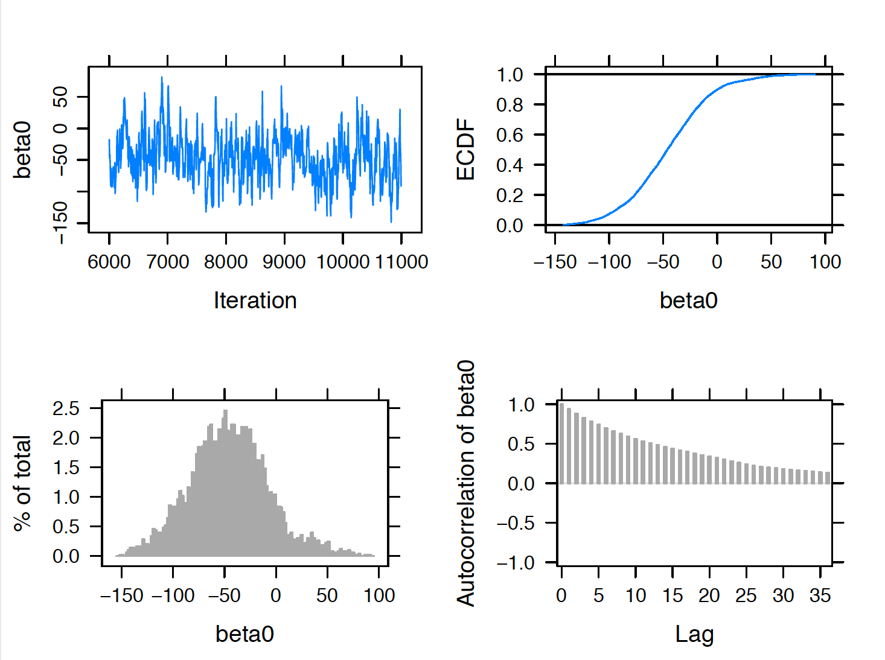
The upper left trace plot shows good MCMC mixing for the 5000 simulated draws of \(\beta_0\). The lower right autocorrelation plot indicates close to zero correlation between adjacent posterior draws of \(\beta_0\). Overall these indicate convergence of the MCMC chain for \(\beta_0\). In usual practice, one should perform these diagnostics for all three parameters in the model.
Figure 7.4 displays a scatterplot of the simulated draws of the regression parameters \(\beta_0\) and \(\beta_1\). It is interesting to note the strong negative correlation in these parameters. If one assigned informative independent priors on \(\beta_0\) and \(\beta_1\), these prior beliefs would be counter to the correlation between the two parameters observed in the data.
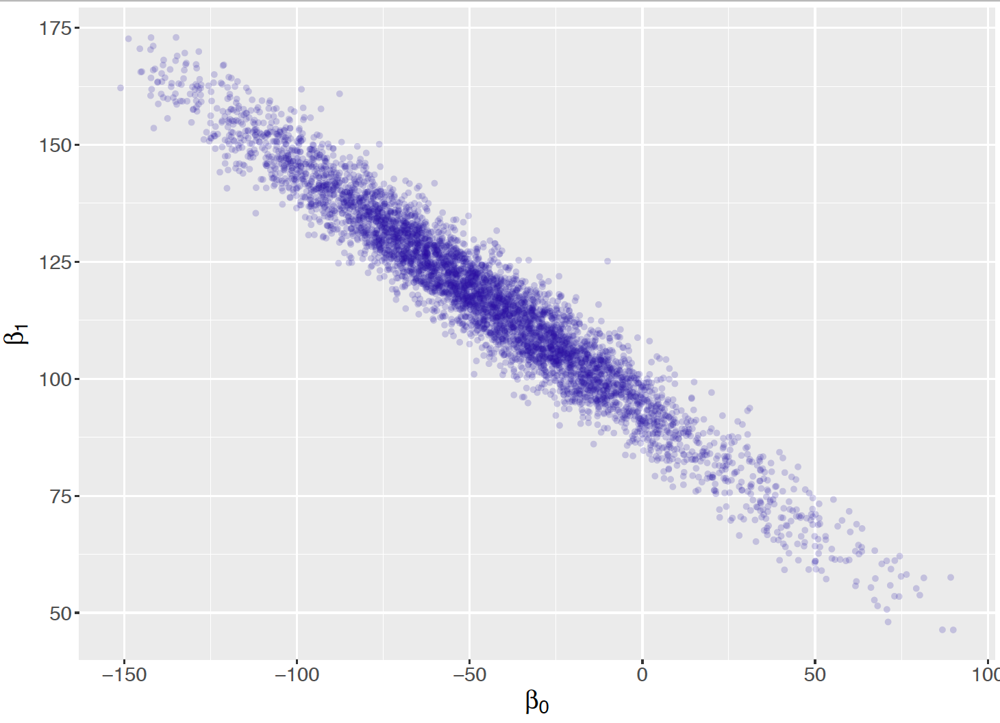
Posterior summaries of the parameters are obtained by use of the print(posterior, digits = 3) command. Note that these summaries are based on the 5000 iterations from the sampling period excluding the samples from the adaption and burn-in periods.
print(posterior, digits = 3)
Lower95 Median Upper95 Mean SD Mode MCerr
beta0 -122 -46.2 31.4 -45.7 37.6 -- 2.98
beta1 78.7 117 159 117 20 -- 1.65
sigma 33.2 45 59.3 45.7 6.93 -- 0.157
Then intercept parameter \(\beta_0\) does not have a useful interpretation, so values of these particular posterior summaries will not be interpreted. The summaries of the slope \(\beta_1\) indicate a positive slope with a posterior median of 117 and a 90% credible interval (78.7, 159). That is, with every 1000 square feet increase of the house size, the house price increases by $117,000. In addition, this increase in the house price falls in the interval ($78,700, $159,000) with 90% posterior probability.
The posterior median of the standard deviation \(\sigma\) is the large value 45 or $45,000 which indicates that there are likely additional variables than house size that determine the price.
7.7 Bayesian Inferences with Simple Linear Regression
7.7.1 Simulate fits from the regression model
The intercept \(\beta_0\) and slope \(\beta_1\) determine the linear relationship between the mean of the response \(Y\) and the predictor \(x\). \[\begin{equation} E(Y) = \beta_0 + \beta_1 x. \label{eq:ExpLink} \end{equation}\] Each pair of values (\(\beta_0, \beta_1\)) corresponds to a line \(\beta_0 + \beta_1 x\) in the space of values of \(x\) and \(y\). If one finds the posterior mean of these coefficients, say \(\tilde {\beta_0}\) and \(\tilde {\beta_1}\), then the line \[\begin{equation*} y = \tilde{\beta_0} + \tilde{\beta_1} x \end{equation*}\] corresponds to a “best” line of fit through the data.
This best line represents a most likely value of the line \(\beta_0 + \beta_1 x\) from the posterior distribution. One learns about the uncertainty of this line estimate by drawing a sample of \(J\) rows from the matrix of posterior draws of \((\beta_0, \beta_1)\) and collecting the line estimates \[\begin{equation*} \tilde{\beta_0}^{(j)} + \tilde{\beta_1}^{(j)} x, j = 1, ..., J. \end{equation*}\]
Using the R script below, one produces a graph showing the best line of fit (solid line) and ten simulated fits from the posterior as in Figure 7.5.
post <- as.mcmc(posterior)
post_means <- apply(post, 2, mean)
post <- as.data.frame(post)
ggplot(PriceAreaData, aes(newsize, price)) +
geom_point(size=3) +
geom_abline(data=post[1:10, ],
aes(intercept=beta0, slope=beta1),
alpha = 0.5) +
geom_abline(intercept = post_means[1],
slope = post_means[2],
size = 2) +
ylab("Price") + xlab("Size") +
theme_grey(base_size = 18, base_family = "")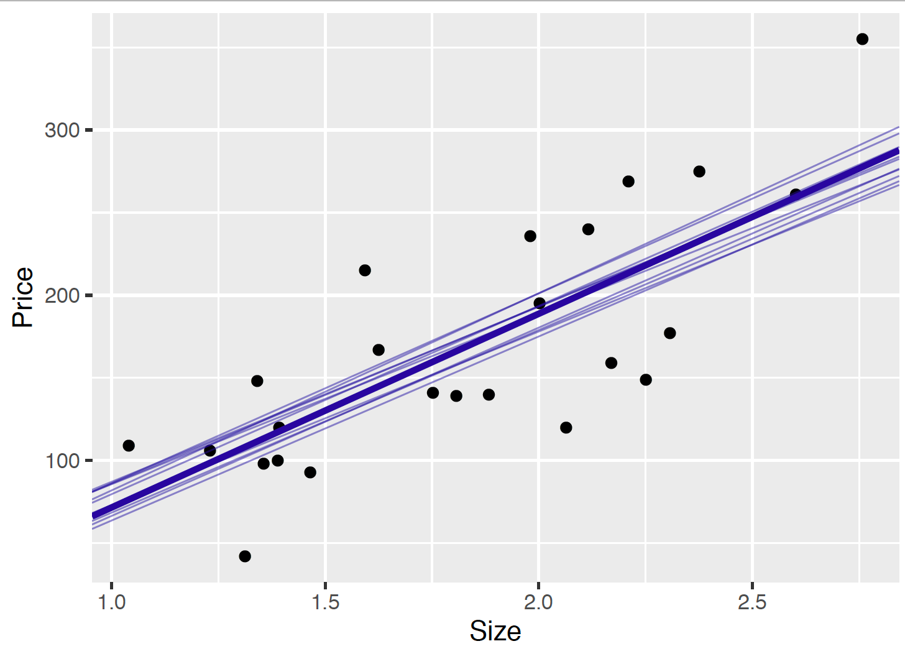
From Figure 7.5, since there is inferential uncertainty about the intercept \(\beta_0\) and slope \(\beta_1\), one sees variation among the ten fits from the posterior of the linear regression line \(\beta_0 + \beta_1 x\). This variation about the best-fitting line is understandable since the size of our sample of data is the relatively small value of 24. A larger sample size would help to reduce the posterior variation for the intercept and slope parameters and result in posterior samples of fits that are more tightly clustered about the best fitting line in Figure 7.5.
7.7.2 Learning about the expected response
In regression modeling, one may be interested in learning about the expected response \(E(Y)\) for a specific value of the predictor \(x\). In the house sale example, one may wish to learn about the expected house price for a specific value of the house size. Since the expected response \(E(Y) = \beta_0 + \beta_1 x\) is a linear function of the intercept and slope parameters, one obtains a simulated sample from the posterior of \(\beta_0 + \beta_1 x\) by computing this function on each of the simulated pairs from the posterior of \((\beta_0, \beta_1)\).
For example, suppose one is interested in the expected price \(E(Y)\) for a house with a size of 1, i.e. \(x = 1\) (1000 sq feet). In the R script below, one simulates 5000 draws from the posterior of the expected house prices, \(E[Y]\) from the 5000 posterior samples of the pair \((\beta_0, \beta_1)\).
size <- 1
mean_response <- post[, "beta0"] + size * post[, "beta1"]This process is repeated for the four sizes \(x = 1.2, 1.6, 2.0, 2.4\) (1200 sq feet, 1600 sq feet, 2000 sq feet, and 2400 sq feet). Let \(E(Y \mid x)\) denotes the expected price for a house with size \(x\). Figure 7.6 displays density plots of the simulated posterior samples for the expected prices \(E(Y \mid 1.2)\), \(E(Y \mid 1.6)\), \(E(Y \mid 2.0)\), \(E(Y \mid 2.4)\) for these four house sizes.
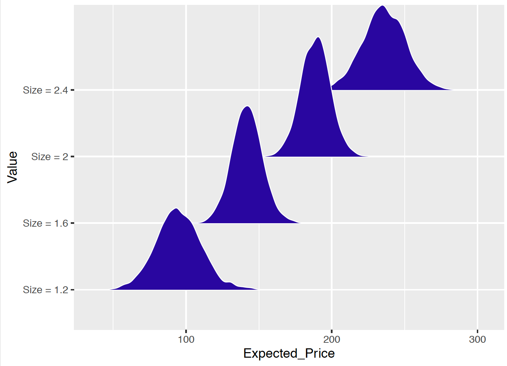
The R output below provides summaries of the posterior of the expected price for each of the four values of the house size. From this output, one sees that, for a house of size of 1.2 (1200 sq feet), the posterior median of the expected price is 94.5 thousand dollars, and the probability that the expected price falls between $69,800 and $121,000 is 90%.
Value P05 P50 P95
<chr> <dbl> <dbl> <dbl>
1 Size = 1.2 69.8 94.5 121
2 Size = 1.6 125 142 159
3 Size = 2 172 189 205
4 Size = 2.4 211 236 2607.7.3 Prediction of future response
Learning about the regression model and values of the expected response values focus on the deterministic linear relationship between \(x\) and \(E[Y]\) through the intercept \(\beta_0\) and the slope \(\beta_1\), as shown in Equation (11.10). The variability among the fitted lines in Figure 7.5 and the variability among the simulated house price for fixed size in Figure 7.6 reflects the variability in the posterior draws of \(\beta_0\) and \(\beta_1\).
However, if one wants to predict future values for a house sale price \(Y\) given its size \(x\), one needs to go one step further to incorporate the sampling model in the simulation process. \[\begin{equation} Y_i \mid \beta_0, \beta_1, \sigma \overset{ind}{\sim} \textrm{Normal}(\beta_0 + \beta_1 x_i, \sigma) \label{eq:modelLik5} \end{equation}\] As shown in Equation (11.11), the sampling model of \(Y\) is a Normal with a mean expressed as a linear combination of \(\beta_0\) and \(\beta_1\) and a standard deviation \(\sigma\). To obtain a predicted value of \(Y\) given \(x = x_i\), one first simulates the expected response from \(\beta_0 + \beta_1 x_i\), and then simulates the predicted value of \(Y_i\) from the sampling model: \(Y_i \sim \textrm{Normal}(E[Y_i], \sigma)\). Below is a diagram for the prediction process for an observation where its house size is given as \(x\), and predicted value denoted as \(\tilde{y}^{(s)}\) for iteration \(s\). Here the simulation size \(S\) is 5000 as there are 5000 posterior samples of each of the three parameters.
\[\begin{eqnarray*} \text{simulate}\,\, E[y]^{(1)} = \beta_0^{(1)} + \beta_1^{(1)} x &\rightarrow& \text{sample}\,\, \tilde{y}^{(1)} \sim {\rm{Normal}}(E[y]^{(1)}, \sigma^{(1)})\\ \text{simulate}\,\, E[y]^{(2)} = \beta_0^{(2)} + \beta_1^{(2)} x &\rightarrow& \text{sample}\,\, \tilde{y}^{(2)} \sim {\rm{Normal}}(E[y]^{(2)}, \sigma^{(2)})\\ &\vdots& \\ \text{simulate}\,\, E[y]^{(S)} = \beta_0^{(S)} + \beta_1^{(S)} x &\rightarrow& \text{sample}\,\, \tilde{y}^{(S)} \sim {\rm{Normal}}(E[y]^{(S)}, \sigma^{(S)})\\ \end{eqnarray*}\]
The R function one_predicted() obtains a simulated sample of the predictive distribution of the house price given a value of the house size. First one uses the posterior sample of \((\beta_0, \beta_1)\) to obtain a posterior sample of the “linear response” \(\beta_0 + \beta_1 x\). Then it simulates draws of the future observation by simulating from a Normal distribution with mean \(\beta_0 + \beta_1 x\) and standard deviation \(\sigma\), where draws of \(\sigma\) are taken from its posterior distribution.
one_predicted <- function(x){
lp <- post[ , "beta0"] + x * post[ , "beta1"]
y <- rnorm(5000, lp, post[, "sigma"])
data.frame(Value = paste("Price =", x),
Predicted_Price = y)
}This process is repeated for each of the house sizes \(x = 1.2, 1.6, 2.0, 2.4\) (1200 sq feet, 1600 sq feet, 2000 sq feet, and 2400 sq feet). Figure 7.7 displays density estimates of these simulated samples from the predictive distributions of the house price. Comparing Figure 7.6 with Figure 7.7, note that the predictive distributions are much wider than the posterior distributions on the expected response. This is what one would anticipate, since the predictive distribution incorporates two types of uncertainty – the inferential uncertainty in the values of the regression line \(\beta_0 + \beta_1 x\) and the predictive uncertainty expressed in the sampling density of the response \(y\) with standard deviation \(\sigma\).
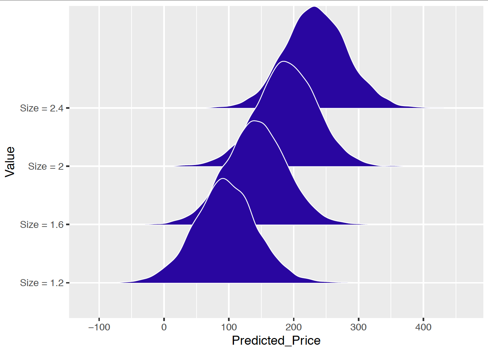
To reinforce this last point, the R output below displays the 5th, 50th, and 95th percentiles of the predictive distribution of the house price for each of the four values of the house size. One saw earlier that a 90% interval estimate for the expected price for a house with \(x = 1.2\) was given by (69.8, 121). Below one sees that a 90% prediction interval for the price of the same house size is \((15.5, 175)\). The prediction interval is substantially wider than the posterior interval estimate. This is true since the predictive distribution incorporates the sizable uncertainty in the house price given the house size represented by the sampling standard deviation \(\sigma\).
Value P05 P50 P95
<chr> <dbl> <dbl> <dbl>
1 Size = 1.2 15.5 94.4 175
2 Size = 1.6 64.5 142 219
3 Size = 2 110 189 266
4 Size = 2.4 157 234 3157.7.4 Posterior predictive model checking
Simulating replicated datasets
The posterior predictive distribution is used to predict the value of a house’s price for a particular house size. It is also helpful in judging the suitability of the linear regression model. The basic idea is that the observed response values should be consistent with predicted responses generated from the fitted model.
In our example, one observed the house size \(x\) and the house price \(y\) for a sample of 24 houses. Suppose one simulates a sample of prices for a sample of 24 houses with the same sizes from the posterior predictive distribution. This is implemented in two steps.
- Values of the parameters \((\beta_0, \beta_1, \sigma)\) are simulated from the posterior distribution – call these simulated values \((\beta^*_0, \beta^*_1, \sigma^*)\).
- A sample \(\{y_1^R, ..., y_n^R\}\) is simulated where the sample size is \(n = 24\) and \(y_i^R\) is Normal(\(\mu^*_i, \sigma^*)\), where \(\mu^*_i = \beta^*_0 + \beta^*_1 x_i\).
This is called a replicated sample from the posterior predictive distribution since one is using the same sample size and covariate values as the original dataset.
For our example, this simulation process was repeated eight times, where each iteration produces a sample \((x_i, y_i^R), i = 1, ..., 24\). Scatterplots of these eight replicated samples are displayed in Figure 7.8. The observed sample is also displayed in this figure.
The question one wants to ask is: Do the scatterplots of the simulated replicated samples resemble the scatterplot of the observed data? Since the \(x\) values are the same for the observed and replicated datasets, one focuses on possible differences in the observed and replicated response values. Possibly, the sample prices display more variation than the replicated prices, or perhaps the sample prices have a particular outlier or other feature that is not present in the replicated prices.
In the examination of these scatterplots, the distribution of the observed responses does not seem markably different from the distribution of the response in the simulated replicated datasets. Therefore in this brief examination, one does not see any indication of model misfit – the observed \((x, y)\) data seems consistent with replicated data generated from the posterior predictive distribution.
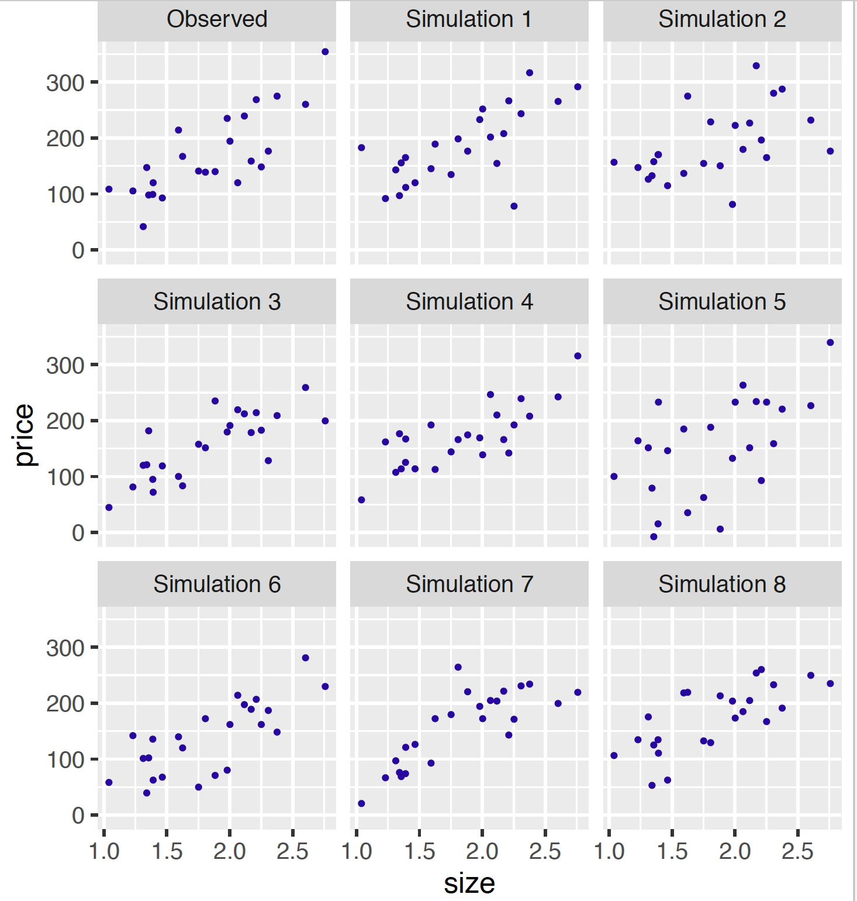
Predictive residuals
In linear regression, one typically explores the residuals that are the deviations of the observations \(\{y_i\}\) from the fitted regression model. The posterior prediction distribution is used to define a suitable Bayesian residual.
Consider the observed point (\(x_i, y_i\)). One asks the question – is the observed response value \(y_i\) consistent with predictions \(\tilde{y}_i\) of this observation from the fitted model? One simulates predictions \(\tilde{y}_i\) from the posterior predictive distribution in two steps:
- One simulates \((\beta_0, \beta_1, \sigma)\) from the posterior distribution.
- One simulates \(\tilde{y}_i\) from a Normal distribution with mean \(\beta_0 + \beta_1 x_i\) and standard deviation \(\sigma\).
By repeating this process many times, one has a sample of values {\(\tilde{y}_i\)} from the posterior predictive distribution.
To see how close the observed response \(y_i\) is to the predictions {\(\tilde{y}_i\)}, one computes the predictive residual \[\begin{equation} r_i = y_i - \tilde{y}_i. \end{equation}\] If this predictive residual is away from zero, that indicates that the observation is not consistent with the linear regression model. Remember that \(\tilde{y}_i\), and therefore the predictive residual \(r_i\) is random. So one constructs a 90% interval estimate for the predictive residual \(r_i\) and says that the observation is unusual if the predictive residual interval estimate does not include zero.
Figure 7.9 displays a graph of the 90% interval estimates for the predictive residuals {\(r_i\)} plotted against the size variable. A horizontal line at the value 0 is displayed and we look for intervals that are located on one side of zero. One notices that a few of the intervals barely overlap zero – this indicates that the corresponding points \((x_i, y_i)\) are somewhat inconsistent with the fitted regression model.
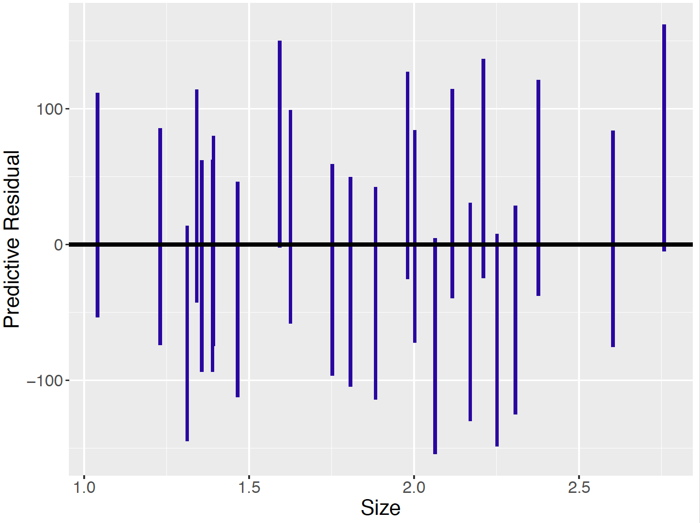
7.8 Informative Prior
One challenge in a Bayesian analysis is the construction of a prior that reflects beliefs about the parameters. In the usual linear function representation in Equation (11.7), thinking about prior beliefs can be difficult since the intercept \(\beta_0\) does not have a meaningful interpretation. To make the regression parameters \(\beta_0\) and \(\beta_1\) easier to interpret, one considers standardizing the response and predictor variables. With this standardization, the task of constructing informative priors will be facilitated.
7.8.1 Standardization
Standardization is the process of putting different variables on similar scales. As we can see in Figure 7.2, the house size variable ranges from 1.0 to over 2.5 (in 1000 sq feet), while the price variable ranges from below 50 to over 350 (in $1000). The standardization process works as follows: for each variable, calculate the sample mean and the sample standard deviation, and then for each observed value of the variable, subtract the sample mean and divide by the sample standard deviation.
For example, let \(y_i\) be the observed sale price and \(x_i\) be the size of a house. Let \(\bar{y}\) and \(\bar{x}\) denote the sample means and \(s_y\) and \(s_x\) denote the sample standard deviations for the \(y_i\)’s and \(x_i\)’s, respectively. Then the standardized variables \(y_i^*\) and \(x_i^*\) are defined by the following formula. \[\begin{equation} y_i^* = \frac{y_i - \bar{y}}{s_y}, \, \, x_i^* = \frac{x_i - \bar{x}}{s_x}. \end{equation}\]
In R, the function scale() performs standardization.
{r PriceAreaData$price_standardized <- scale(PriceAreaData$price) PriceAreaData$size_standardized <- scale(PriceAreaData$newsize)
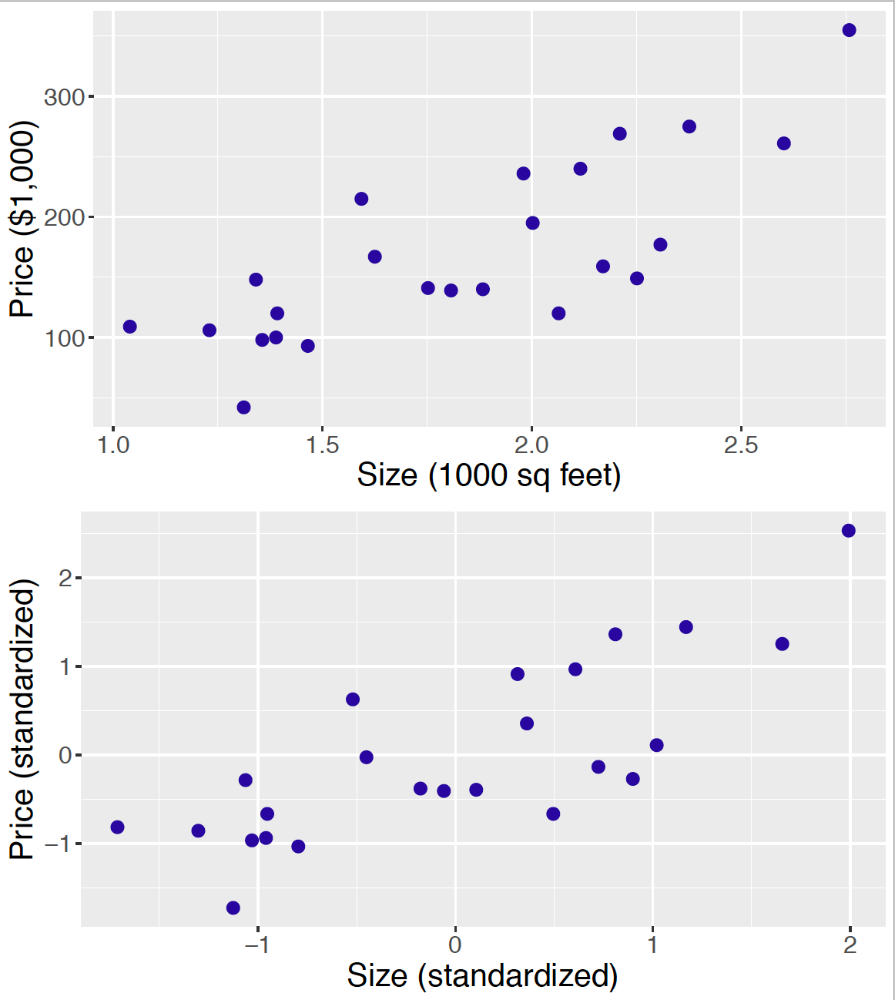
A standardized value represents the number of standard deviations that the value falls above or below the mean. For example, if \(x_i^* = -2\), then this house size is two standard deviations below the mean of all house sizes, and a value \(y_i = 1\) indicates a sale price that is one standard deviation larger than the mean. Figure 7.10 constructs a scatterplot of the original \((x, y)\) data (top) and the standardized \((x^*, y^*)\) data (bottom). Note that the ranges of the standardized scores for the \(x^*\) and \(y^*\) are similar – both sets of standardized scores fall between \(-2\) and 2. Also note that the association pattern of the two graphs agree which indicates that the standardization procedure has no impact on the relationship of house size with the sale price.
One advantage of standardization of the variables is that it provides more meaningful interpretations of the regression parameters \(\beta_0\) and \(\beta_1\). The linear regression model with the standardized variables is written as follows:
\[\begin{equation} Y_i^* \mid \mu_i^*, \sigma \overset{ind}{\sim} \textrm{Normal}(\mu_i^*, \sigma), \end{equation}\] \[\begin{equation} \mu_i^* = \beta_0 + \beta_1 x_i^*. \end{equation}\]
The intercept parameter \(\beta_0\) now is the expected standardized sale price for a house where \(x_i^* = 0\) corresponding to a house of average size. The slope \(\beta_1\) gives the change in the expected standardized sale price \(\mu_i^*\) when the standardized size \(x_i^*\) increases by 1 unit, or when the size variable increases by one standard deviation. In addition, when the variables are standardized, the slope \(\beta_1\) can be shown equal to the correlation between \(x_i\) and \(y_i\). So this slope provides a meaningful measure of the linear relationship between the standardized predictor \(x_i^*\) and the expected standardized response \(\mu_i^*\). A positive value \(\beta_1\) indicates a positive linear relationship between the two variables, and the absolute value of \(\beta_1\) indicates the strength of the relationship.
7.8.2 Prior distributions
As in the weakly informative prior case, assume that the three parameters \(\beta_0\), \(\beta_1\) and \(\sigma\) are independent so the joint prior is factored into the marginal components. \[\begin{equation*} \pi(\beta_0, \beta_1, \sigma) = \pi(\beta_0) \pi(\beta_1) \pi(\sigma). \end{equation*}\] Then the task of assigning a joint prior simplifies to the task of assigning priors separately to each of the three parameters. The process of assigning an informative prior is described for each parameter.
Prior on the intercept \(\beta_0\)
After the data is standardized, recall that the intercept \(\beta_0\) represents the expected standardized sale price given a house of average size (i.e. \(x_i^* = 0\)). If one believes a house of average size will also have an average price, then a reasonable guess of \(\beta_0\) is zero. One can give a Normal prior for \(\beta_0\) with mean \(\mu_0 = 0\) and standard deviation \(s_0\): \[\begin{equation*} \beta_0 \sim \textrm{Normal}(0, s_0). \end{equation*}\]
The standard deviation \(s_0\) in the Normal prior reflects how confident the person believes in the guess of \(\beta_0 = 0\). For example, if one specifies \(\beta_0 \sim \textrm{Normal}(0, 1)\), this indicates that a price of a house of average size could range from one standard deviation below to one standard deviation above the average price. Since this is a wide range, one is stating that he or she is unsure that a house of average size will have an average price. If one instead is very sure of the guess that \(\beta_0 = 0\), one could choose a smaller value of \(s_0\).
Prior on the slope \(\beta_1\)
For standardized data, the slope \(\beta_1\) represents the correlation between the house size and the sale price. One represents one’s belief about the location of \(\beta_1\) by means of a Normal prior. \[\begin{equation*} \beta_1 \sim \textrm{Normal}(\mu_1, s_1), \end{equation*}\] For this prior, \(\mu_1\) represents one’s best guess of the correlation and \(s_1\) represents the sureness of this guess. For example, if one lets \(\beta_1\) be \(\textrm{Normal}(0.7, 0.15)\), this means that one’s “best guess” of the correlation is 0.7 and one is pretty certain that the correlation falls between \(0.7 - 0.15\) and \(0.7 + 0.15\). If one is not very sure of the guess of 0.7, one could choose a larger value of \(s_1\).
Prior on \(\sigma\)
It is typically harder to specify informative beliefs about a standard deviation than a mean parameter such as \(\beta_0 + \beta_1 x\). So it seems reasonable to assign a weakly informative prior for the sampling error standard deviation \(\sigma\). A Gamma prior for the precision parameter \(\phi = 1/\sigma^2\) with small values of the shape and rate parameters, say \(a = 1\) and \(b = 1\), can represent weak prior information in this regression setting. \[\begin{equation*} 1/\sigma^2 \sim \textrm{Gamma}(1, 1). \end{equation*}\]
To summarize, the informative prior distribution for (\(\beta_0\), \(\beta_1\), \(\sigma\)) is defined as follows. \[\begin{equation} \pi(\beta_0, \beta_1, \sigma) = \pi(\beta_0) \pi(\beta_1) \pi(\sigma), \end{equation}\]
\[\begin{equation} \beta_0 \sim \textrm{Normal}(0, 1), \end{equation}\]
\[\begin{equation} \beta_1 \sim \textrm{Normal}(0.7, 0.15), \end{equation}\]
\[\begin{equation} 1/\sigma^2 \sim \textrm{Gamma}(1, 1). \end{equation}\]
7.8.3 Posterior Analysis
One again uses the JAGS software to simulate from the posterior distribution of the parameters. The modelString is written in the same way as in Section 11.6.
Since the data have been standardized, one needs to do some initial preliminary work before the MCMC implementation.
First, in R, one defines new variables price_standardized and size_standardized that are standardized versions of the original price and newsize variables.
PriceAreaData$price_standardized <- scale(PriceAreaData$price)
PriceAreaData$size_standardized <- scale(PriceAreaData$newsize)Then the variables y and x in modelString now correspond to the standardized data. Also in the definition of the the_data list, we enter the mean and precision values of the informative priors placed on the regression intercept and slope. Remember that one needs to convert the prior standard deviations \(s_0\) and \(s_1\) to the corresponding precision values.
y <- as.vector(PriceAreaData$price_standardized)
x <- as.vector(PriceAreaData$size_standardized)
N <- length(y)
the_data <- list("y" = y, "x" = x, "N" = N,
"mu0" = 0, "g0" = 1,
"mu1" = 0.7, "g1" = 44.4,
"a" = 1, "b" = 1)With the redefinition of the standardized variables y and x, the same JAGS script modelString is used to define the posterior distribution. As before, the run.jags() function is run, collecting a sample of 5000 draws from \((\beta_0, \beta_1, \sigma)\).
posterior2 <- run.jags(modelString,
n.chains = 1,
data = the_data,
monitor = c("beta0", "beta1", "sigma"),
adapt = 1000,
burnin = 5000,
sample = 5000)Comparing posteriors for two priors
To understand the influence of the informative prior, one can contrast this posterior distribution with a posterior using a weakly informative prior. Suppose one assumes that \(\beta_0\), \(\beta_1\), and \(\sigma\) are independent with \(\beta_0 \sim \textrm{Normal}(0, 100)\), \(\beta_1 \sim \textrm{Normal}(0.7, 100)\) and \(\phi = 1 / \sigma^2 \sim \textrm{Gamma}(1, 1)\). This prior differs from the informative prior in that large values are assigned to the standard deviations, reflecting weak information about the location of the regression intercept and slope.
the_data <- list("y" = y, "x" = x, "N" = N,
"mu0" = 0, "g0" = 0.0001,
"mu1" = 0.7, "g1" = 0.0001,
"a" = 1, "b" = 1)posterior3 <- run.jags(modelString,
n.chains = 1,
data = the_data,
monitor = c("beta0", "beta1", "sigma"),
adapt = 1000,
burnin = 5000,
sample = 5000)Figure 7.11 displays density estimates of the simulated posterior draws of the slope parameter \(\beta_1\) under the informative and weakly informative prior distributions. Note that the “informative prior” posterior has less spread than the “weakly informative prior” posterior. This is to be expected since the informative prior adds more information about the location of the slope parameter. In addition, the “informative prior” posterior shifts the “weakly informative prior” posterior towards the prior belief that the slope is close to the value 0.7.
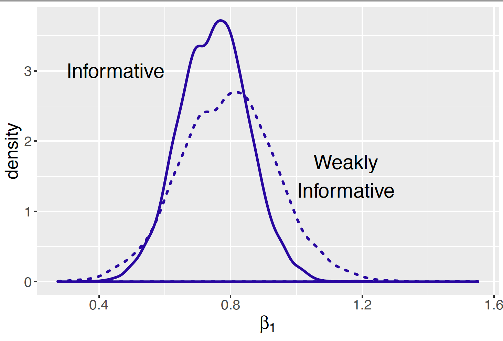
After viewing Figure 7.11, one would expect the posterior interval estimate for the slope \(\beta_1\) to be shorter with the informative prior. We had earlier found that the 90% interval estimate for \(\beta_1\) to be (0.551, 0.959) with the informative prior. The 90% interval for the slope with the weakly informative prior is (0.501, 1.08) which is about 40% longer than the interval using the informative prior.
print(posterior2, digits = 3)
Lower95 Median Upper95 Mean SD Mode MCerr
beta0 -0.267 0.000358 0.276 0.000372 0.138 -- 0.00195
beta1 0.551 0.751 0.959 0.749 0.104 -- 0.00147
sigma 0.498 0.67 0.878 0.682 0.102 -- 0.00154print(posterior3, digits = 3)
Lower95 Median Upper95 Mean SD Mode MCerr
beta0 -0.273 0.000362 0.281 0.000421 0.141 -- 0.00199
beta1 0.501 0.794 1.08 0.792 0.146 -- 0.00207
sigma 0.502 0.677 0.894 0.688 0.105 -- 0.00163 7.9 A Conditional Means Prior
In this chapter, we have illustrated two methods for constructing a prior on the parameters of a regression model. The first method reflects weakly informative prior beliefs about the parameters, and the second method assesses an informative prior on the regression parameters on a model on standardized data. In this section, a third method is described for representing prior beliefs on a regression model on the original data. This approach assesses a prior on \((\beta_0, \beta_1, \sigma)\) indirectly by stating prior beliefs about the expected response value conditional on specific values of the predictor variable.
Learning about a gas bill from the outside temperature
A homeowner will typically have monthly payments on basic utilities such as water, natural gas, and electricity. One particular homeowner observes that her monthly natural gas bill seems to vary across the year. The bill is larger for colder months and smaller for warmer months. That raises the question: can one accurately predict one’s monthly natural gas bill from the outside temperature?
To address this question, the homeowner collects the monthly gas bill in dollars and the average monthly outside temperature for all twelve months in a particular year. Figure 7.12 displays a scatterplot of the temperatures and bill amounts. Note that the month bill appears to decrease as a function of the temperature. This motivates consideration of the linear regression model \[\begin{equation} Y_i \mid \beta_0, \beta_1, \sigma \sim {\rm Normal}(\beta_0 + \beta_1 x_i, \sigma), \end{equation}\] where \(x_i\) and \(y_i\) are respectively the average temperature (degrees in Fahrenheit) and the bill amount (in dollars) in month \(i\), and \((\beta_0, \beta_1, \sigma)\) are the unknown regression parameters.
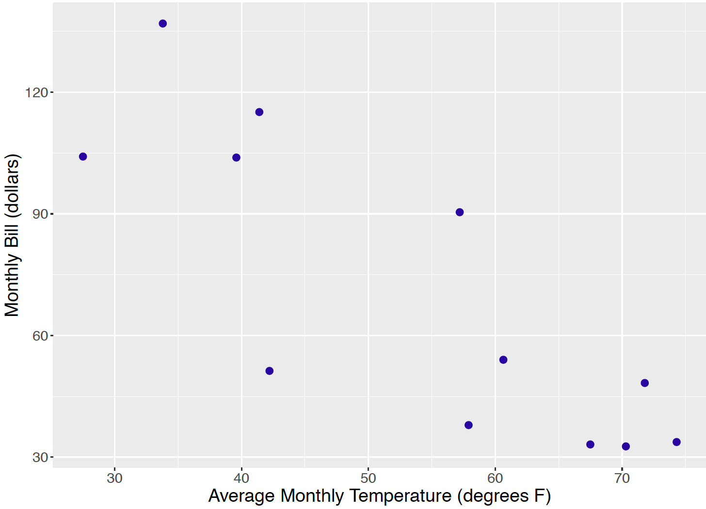
A conditional means prior
To construct a prior, first assume that one’s beliefs about the regression parameters \((\beta_0, \beta_1)\) are independent of the beliefs on the standard deviation \(\sigma\) and so the joint prior can be factored into the marginal densities: \[\begin{equation*} \pi(\beta_0, \beta_1, \sigma) = \pi(\beta_0, \beta_1) \pi(\sigma). \end{equation*}\] With the unstandardized data, it is difficult to think directly about plausible values of the intercept \(\beta_0\) and slope \(\beta_1\) and also how these regression parameters are related. But it may be easier to formulate prior opinion about the mean values \[\begin{equation} \mu_i^* = \beta_0 + \beta_1 x_i^*, \end{equation}\] for two specified values of the predictor \(x_1^*\) and \(x_2^*\). The conditional means approach proceeds in two steps.
- For the first predictor value \(x_1^*\) construct a Normal prior for the mean value \(\mu_1^*\). Let the mean and standard deviation values of this prior be denoted by \(m_1\) and \(s_1\), respectively.
- Similarly, for the second predictor value \(x_2^*\) construct a Normal prior for the mean value \(\mu_2^*\) with respective mean and standard deviation \(m_2\) and \(s_2\).
If one assumes that one’s beliefs about the conditional means are independent, then the joint prior for the vector \((\mu_1^*, \mu_2^*)\) has the form \[\begin{equation*} \pi(\mu_1^*, \mu_2^*) = \pi(\mu_1^*) \pi(\mu_2^*). \end{equation*}\]
This prior on the two conditional means implies a Bivariate Normal prior on the regression parameters. The two conditional means \(\mu_1^*\) and \(\mu_2^*\) were written above as a function of the regression parameters \(\beta_0\) and \(\beta_1\). By solving these two equations for the regression parameters, one expresses each parameter as a function of the conditional means: \[\begin{equation} \beta_1 = \frac{\mu_2^* - \mu_1^*}{x_2 - x_1}, \label{eq:cmp:beta1} \end{equation}\] \[\begin{equation} \beta_0 = \mu_1^* - x_1 \left(\frac{\mu_2^* - \mu_1^*}{x_2 - x_1}\right). \label{eq:cmp:beta0} \end{equation}\] Note that both the slope \(\beta_0\) and \(\beta_1\) are linear functions of the two conditional means \(\mu_1^*\) and \(\mu_2^*\) and this implies that \(\beta_0, \beta_1\) will have a Bivariate Normal distribution.
Regression analysis of the gas bill example
The process of constructing a conditional means prior is illustrated for our gas bill example. Consider two different temperature values, say 40 degrees and 60 degrees, and, for each temperature, construct a Normal prior for the expected monthly bill. After some thought, the following priors are assigned.
If \(x = 40\), the mean bill \(\mu_1^* = \beta_0 + \beta_1 (40)\) is Normal with mean $100 and standard deviation $20. This statement indicates that one believes the average gas bill will be relatively high during a cold month averaging 40 degrees.
If \(x = 60\), the mean bill \(\mu_2^* = \beta_0 + \beta_1 (100)\) is Normal with mean $50 and standard deviation $15. Here the month’s average temperature is warmer and one believes the gas cost will average $50 lower than in the first scenario.
By assuming independence of our prior beliefs about the two means, we have \[\begin{equation} \pi(\mu_1^*, \mu_2^*) = \phi(\mu_1^*, 100, 20) \phi(\mu_2^*, 50, 15), \end{equation}\] where \(\phi(y, \mu, \sigma)\) denotes the Normal density with mean \(\mu\) and standard deviation \(\sigma\).
The prior on the two means is an indirect way of assessing a prior on the regression parameters \(\beta_0\) and \(\beta_1\). One simulate pairs \((\beta_0, \beta_1)\) from the prior distribution by simulating values of the means \(\mu_1^*\) and \(\mu_2^*\) from independent Normal distributions and applying Equation (11.22) and Equation (11.23).
Simulated draws from the prior are conveniently produced using the JAGS software. The prior is specified for the conditional means by two applications of the dnorm() function and the regression parameters are defined as functions of the conditional means. The prior standard deviations of beta0 and beta1 are 20 and 15 and so the corresponding precisions are 1 / 20 ^ 2 and 1 / 15 ^ 2. These precision values s1 and s2 (not the standard deviations) are used in the JAGS script.
modelString = "
model{
beta1 <- (mu2 - mu1) / (x2 - x1)
beta0 <- mu1 - x1 * (mu2 - mu1) / (x2 - x1)
mu1 ~ dnorm(m1, s1)
mu2 ~ dnorm(m2, s2)
}"Figure 7.13 displays 1000 simulated draws of \((\beta_0, \beta_1)\) from the the conditional means prior. It is interesting to note that although the conditional means \(\mu_1^*\) and \(\mu_2^*\) are independent, the implied prior on the regression coefficients indicates that \(\beta_0\) and \(\beta_1\) are strongly negatively correlated.
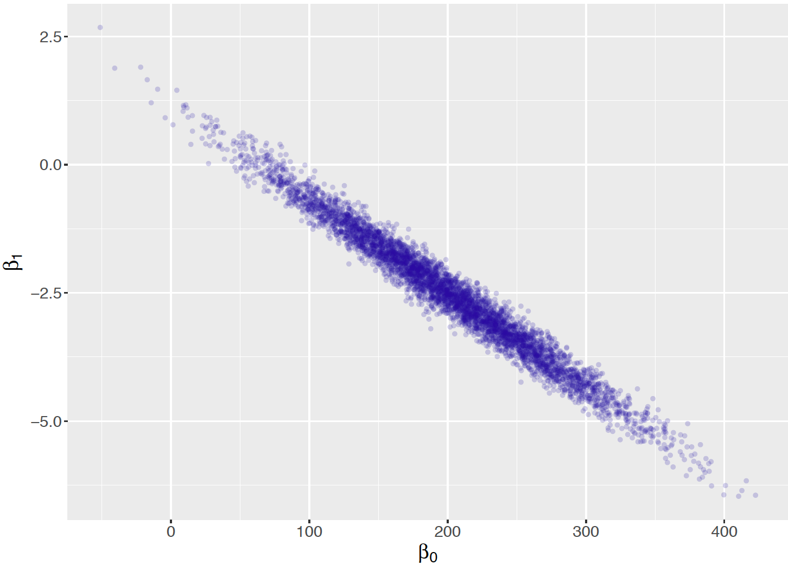
The conditional means approach is used to indirectly specify a prior on the regression vector \(\beta = (\beta_0, \beta_1)\). To complete the prior, one assigns the precision parameter \(\phi = 1 / \sigma^2\) a Gamma prior with parameters \(a\) and \(b\). Then the prior density on all parameters has the form \[\begin{equation*} \pi(\beta_0, \beta_1, \sigma) = \pi_{CM}(\beta_0, \beta_1) \pi(\sigma), \end{equation*}\] where \(\pi_{CM}\) is the conditional means prior.
Using this conditional means prior and the gas bill data, one also uses JAGS to simulate from the posterior distribution of \((\beta_0, \beta_1, \sigma)\). In the exercises, the reader will have the opportunity to perform inference about the regression line. In addition, there will be an opportunity to compare inferences using conditional means and weakly informative priors.
7.10 Exercises
- Linear Regression Model
Suppose one is interested in predicting a person’s height \(y_i\) in cm from his or her arm span \(x_i\) in cm. Let \(\mu_i\) denote the mean \(\mu_i = E(Y_i \mid x_i)\). Are the following linear models? If not, explain why.
- \(\mu_i = \beta_0 + x_i / \beta_1\)
- \(\mu_i = \beta_1 x _i\)
- \(\mu_i = \beta_0 + \beta_1 x_i\)
- \(\mu_i = \exp(\beta_0 + \beta_1 x_i)\)
- Linear Regression Model
Suppose a researcher collects some daily weather data for Denver, Colorado for several winter months. She considers the regression model \(Y_i \mid \mu_i, \sigma \sim \textrm{Normal}(\mu_i, \sigma)\) where \[ \mu_i = \beta_0 + \beta_1 x_i, \] and \(x_i\) and \(y_i\) are respectively the observed temperature (in degrees Fahrenheit) and snowfall (in inches) on data collected on the \(i\)-th day.
- Interpret the intercept parameter \(\beta_0\).
- Interpret the slope parameter \(\beta_1\).
- Suppose \(\beta_0 = 5\), \(\beta_1 = -0.2\), and \(\sigma = 0.2\). If the temperature is 10 degrees, use this model to predict the amount of snowfall.
- With the same assumptions in part (c), find a 90% interval estimate for the amount of snowfall.
- Pythagorean Result in Baseball
Table 7.2 displays the average runs scored \(R\), the average runs allowed \(RA\), the number of wins \(W\), the number of losses \(L\) for 15 National League teams in the 2018 baseball season. This data is contained in the datafile pythag2018.csv. By the Pythagorean formula, if \(y = \log(W / L)\) and \(x = \log(R / RA)\), then approximately \(y = \beta x\) for some slope parameter \(\beta\). Consider the model \(Y_i \sim \textrm{Normal}(\beta x_i, \sigma)\) where \(x_i\) and \(y_i\) are the values of \(\log (R / RA)\) and \(\log (W / L)\) for the \(i\)-th team.
Suppose one assumes \(\beta\) and \(\sigma\) are independent where \(\beta \sim \textrm{Normal}(0, 10)\) and the precision \(\phi = 1 / \sigma^2\) is Gamma with parameters 0.001 and 0.001. Write down the expression for the joint posterior density of \((\beta, \sigma)\).
Using JAGS, write a script defining the Bayesian model and use MCMC to simulate a sample of 1000 draws from the posterior distribution.
From the simulated output, construct 90% interval estimates for the slope \(\beta\) and for the standard deviation \(\sigma\).
| Tm | R | RA | W | L | Tm | R | RA | W | L |
|---|---|---|---|---|---|---|---|---|---|
| MIL | 4.6 | 4 | 96 | 67 | ARI | 4.3 | 4 | 82 | 80 |
| CHC | 4.7 | 4 | 95 | 68 | PHI | 4.2 | 4.50 | 80 | 82 |
| LAD | 4.9 | 3.70 | 92 | 71 | NYM | 4.2 | 4.40 | 77 | 85 |
| COL | 4.8 | 4.60 | 91 | 72 | SFG | 3.7 | 4.30 | 73 | 89 |
| ATL | 4.7 | 4.10 | 90 | 72 | CIN | 4.3 | 5.10 | 67 | 95 |
| STL | 4.7 | 4.30 | 88 | 74 | SDP | 3.8 | 4.70 | 66 | 96 |
| PIT | 4.3 | 4.30 | 82 | 79 | MIA | 3.7 | 5 | 63 | 98 |
| WSN | 4.8 | 4.20 | 82 | 80 |
- Pythagorean Result in Baseball (continued)
- Suppose a team scores on average 4.5 runs and allows, on average, 4.0 runs, so \(x = \log(R / RA) = \log(4.5 / 4) = 0.118\). Simulate 1000 draws from the posterior distribution of \(\mu = \beta x\).
- If \(x = 0.118\), use the work from part (a) to simulate repeated draws of the posterior predictive distribution of \(y = \log(W /L)\) and use the output to construct a 90% prediction interval for \(y\).
- From the interval found in part (b), find a 90% prediction interval for the number of wins in a 162 game season.
- Pythagorean Result in Baseball (continued)
A traditional least-squares of the model \(y = \beta x\) can be found by use of the lm() function for the 2018 team data as follows.
fit <- lm(I(log(W / L)) ~ 0 + I(log(R / RA)),
data = pythag2018)
summary(fit)The “Estimate” value is the least-squares estimate of the slope \(\beta\) and the “Std. Error” provides an estimate at the sampling error of this estimate. Compare these estimates with the Bayesian posterior mean and standard deviation of \(\beta\) using a weakly informative prior.
- Height and Arm Span
A person’s arm span is strongly related to one’s height. To investigate this relationship, arm spans and heights were measured (in cm) for a sample of 20 students and stored in the file `arm_height.csv. (This data was simulated using statistics from Mohanty, Babu, and Nair (2001).) Consider the regression model \(Y_i \sim \textrm{Normal}(\mu_i, \sigma)\) where \(\mu_i = \beta_0 + \beta_1 x_i\), and \(y_i\) and \(x_i\) are respectively the height and arm span for the \(i\)-th student.
Suppose that one assigns a weakly informative prior to the vector \((\beta_0, \beta_1, \sigma)\) where \(\beta_0\) and \(\beta_1\) are independent Normal with mean 0 and standard deviation 10, and the precision \(\phi = 1/\sigma^2\) is Gamma with parameters 0.1 and 0.1. Use JAGS to obtain a simulated sample from the posterior distribution. Find the posterior means of the regression intercept and slope and interpret these posterior means in the context of the problem.
Rescale the heights and arm spans and consider the alternative regression model \(Y_i^* \sim \textrm{Normal}(\mu_i, \sigma)\) where \(\mu_i = \beta_0 + \beta_1 x_i^*\) and \(x_i^*\) and \(y_i^*\) are the rescaled measurements found by subtracting the respective means and dividing by the respectively standard deviations, i.e. standardized. By using similar weakly informative priors as in part (a), use JAGS to simulate from the joint posterior distribution. Find the posterior means of the regression parameters for this rescaled problem and interpret the means.
- Height and Arm Span (continued)
Consider the problem of learning about a student’s height using his or her arm span where the measurements are both standardized and one assigns weakly informative priors on the parameters.
- Consider a student’s whose arm span is one standard deviation above the mean so \(x_i^* = 1\). Using the simulated sample from the posterior distribution, find the posterior mean and 90% interval estimate for the expected rescaled height.
- For the same value \(x_i^* = 1\), simulate a sample from the posterior predictive distribution of a future standardized height \(y_i^*\). Estimate the mean and construct a 90% prediction interval for \(y_i^*\).
- Compare the intervals computed in parts (a) and (b) and explain how they are different.
- Serving Size and Calories of Sandwiches
McDonald’s restaurant publishes nutritional information on the sandwiches they serve. Table 7.3 displays the serving size (in grams) and the calories for some sandwiches. (This data is available from the file mcdonalds.csv.). One is interested in the model \(Y_i \sim \textrm{Normal}(\mu_i, \sigma)\), where \(\mu_i = \beta_0 + \beta_1 x_i\) and \(y_i\) and \(x_i\) are respectively the calories and serving size for the \(i\)-th sandwich.
| Sandwich | Size | Calories |
|---|---|---|
| Hamburger | 105 | 260 |
| Cheeseburger | 119 | 310 |
| Double Cheeseburger | 173 | 460 |
| Quarter Pounder with Cheese | 199 | 510 |
| Double Quarter Pounder with Cheese | 280 | 730 |
| Big Mac | 219 | 560 |
| Big N’ Tasty | 232 | 470 |
| Filet-O-Fish | 141 | 400 |
| McChicken | 147 | 370 |
| Premium Grilled Chicken Classic Sandwich | 229 | 420 |
| Premium Crispy Chicken Classic Sandwich | 232 | 500 |
Using a suitable weakly informative prior for the regression parameters and the standard deviation, use JAGS to obtain a simulated sample from the joint posterior distribution.
Construct a graph and 95% interval estimate for the regression slope \(\beta_1\). Is there sufficient evidence to say that sandwiches with larger serving sizes have more calories?
For a sandwich with serving size 200 grams, simulate a sample from the predictive distribution of the number of calories. Construct a 95% prediction interval for the number of calories.
- Serving Size and Calories of Sandwiches (continued)
In Exercise 8, one obtained a simulated sample from the posterior distribution of \((\beta_0, \beta_1, \sigma)\) using a weakly informative prior.
Suppose one is interested in learning about the expected calories \(\mu\) for a sandwich where the serving size is 300 grams. From the simulated sample from the posterior, construct a sample from the posterior of \(\mu\) and construct a 90% interval estimate.
Suppose one is interested in learning about the value of the serving size \(x^*\) such that the mean calories \(\beta_0 + \beta_1 x^*\) is equal to 500. First write the serving size \(x^*\) as a function of \(\beta_0\) and \(\beta_1\). Then use this representation to find a 90% interval estimate for the serving size \(x^*\).
- Movie Sales
Table 7.4 displays the weekend and gross sales, in millions of dollars, for ten popular movies released in 2017. This data is contained in the file movies2017.csv. Suppose one is interested in studying the relationship between the two variables by fitting the model \[\begin{equation*}
Y_i \mid \beta_0, \beta_1, \sigma \sim \textrm{Normal}(\beta_0 + \beta_i x_i, \sigma),
\end{equation*}\] where \(y_i\) and \(x_i\) are respectively the gross sales and weekend sales for the \(i\)-th movie.
| Movie | Weekend | Gross |
|---|---|---|
| Beauty and the Beast | 174 | 504 |
| The Fate of the Furious | 99 | 226 |
| Despicable Me 3 | 72 | 264 |
| Spider-Man: Homecoming | 117 | 334 |
| Guardians of the Galaxy, Vol 2. | 147 | 389 |
| Thor: Ragnarok | 122 | 315 |
| Wonder Woman | 103 | 413 |
| Pirates of the Caribbean | 63 | 173 |
| It | 123 | 327 |
| Justice League | 94 | 229 |
Assuming weekly informative priors on the regression parameters and the standard deviation, use JAGS to simulate from the joint posterior distribution of \((\beta_0, \beta_1, \sigma)\).
Construct a scatterplot of the simulated draws of \(\beta_0\) and \(\beta_1\).
From your output, is there significant evidence that weekend sales is a useful predictor of gross sales? Explain.
From the simulated draws, construct a 80% interval estimate for the average gross sales for all movies that have a $100 million weekend sales.
Suppose you are interested in predicting the gross sales for a single move that has $100 million weekend sales. Construct a 80% prediction interval for the gross sales.
- Fog Index and Complex Words of Books
The amazon.com website used to provide “text statistics” for many of the books it sold. For a particular book, the website displayed the “fog index”, the number of years of formal education required to read and understand a passage of text, and the “complex words”, the percentage of words in the book with three or more syllables. Table 7.5 displays the complex words and fog index for a selection of 21 popular books. (This data is contained in the file book_stats.csv.) Suppose one is interested in predicting the fog index of a book given its complex words measurement. Using suitable weakly informative priors on the parameters, fit a simple regression model by simulating 5000 draws from the joint posterior distribution. Use this output to construct a 90% prediction interval for a book whose complex word measurement is 10.
| Book | Complex Words | Fog Index |
|---|---|---|
| A Million Little Pieces | 4.00 | 5.70 |
| The Five People You Meet in Heaven | 6.00 | 6.60 |
| The Glass Castle | 6.00 | 8.40 |
| The Mermaid Chair | 7.00 | 8.20 |
| The Kite Runner | 7.00 | 7.10 |
| Marley & Me | 8.00 | 9.20 |
| Memoirs of a Geisha | 8.00 | 10.10 |
| In Cold Blood | 10.00 | 9.80 |
| Moneyball | 10.00 | 10.30 |
| Jim Cramer’s Real Money | 10.00 | 11.70 |
| The Da Vinci Code | 12.00 | 9.10 |
| Power of Thinking Without Thinking | 12.00 | 11.60 |
| A Mathematician at the Ballpark | 12.00 | 10.20 |
| Misquoting Jesus | 13.00 | 16.10 |
| The Tipping Point | 13.00 | 12.60 |
| Freakonomics | 14.00 | 11.10 |
| Curve Ball | 14.00 | 10.10 |
| The World is Flat | 15.00 | 15.00 |
| Confessions of an Economics Hit Man | 15.00 | 12.80 |
| Collapse | 17.00 | 18.00 |
| Ordinal Data Modeling | 24.00 | 14.60 |
- Distances of Batted Balls
Figure 7.14 displays a scatterplot of the launch speed (mph) and distance traveled (feet) for batted balls hit by the baseball player Mike Trout during the 2018 season. This data is contained in the file trout20.csv.
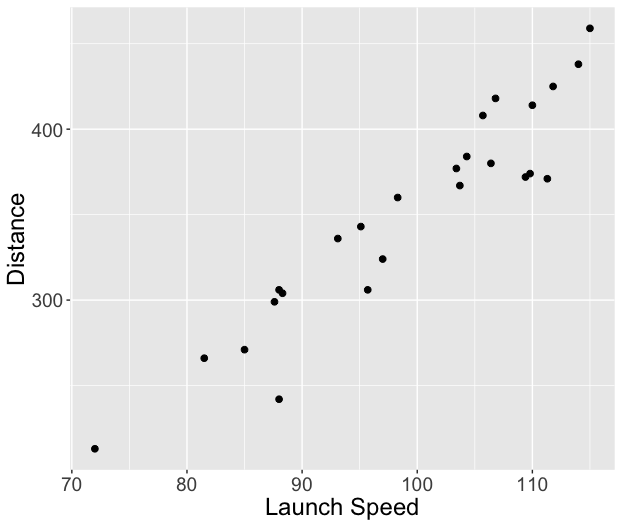
In R, rescale both the explanatory and response variables so each has mean 0 and standard deviation 1.
Consider the regression model on the rescaled data: \(Y^*_i \sim \textrm{Normal}(\mu^*_i, \sigma)\) where \[\begin{equation*} \mu^*_i = \beta_0 + \beta_1 x^*_i, \end{equation*}\] where \(y^*_i\) and \(x^*_i\) are respectively the rescaled distance traveled and rescaled launch speed of the \(i\)-th batted ball. Suppose one has little prior beliefs about the values of the parameters \(\beta_0\), \(\beta_1\) and \(\sigma\). One assumes that the parameter are independent where \(\beta_0\) and \(\beta_1\) are assigned normal priors with mean 0 and standard deviation 10, and the precision \(\phi = 1 / \sigma^2\) is Gamma with parameters 0.1 and 0.1. Use JAGS to obtain a simulated sample of 5000 draws from the posterior distribution of \((\beta_0, \beta_1, \sigma)\).
From the simulated output, construct a density estimate and 90% interval estimate for the slope parameter \(\beta_1\).
Using the output, obtain simulated draws of the expected standardized distances when the standardized speed is equal to one. Construct a 90% interval estimate for the expected distance.
Obtain a simulated sample from the predicted standardized distance when the standardized speed is equal to one. Construct a 90% prediction interval and compare this interval with the interval constructed in part (c).
- Distance of Batted Balls (continued)
Consider the use of the regression model on the standardized data \(Y^*_i \sim \textrm{Normal}(\mu^*_i, \sigma)\) where \[\begin{equation*} \mu^*_i = \beta_0 + \beta_1 x^*_i, \end{equation*}\] where \(y^*_i\) and \(x^*_i\) are respectively the rescaled distance traveled and rescaled launch speed of the \(i\)-th batted ball.
- Suppose one believes that if Trout hits a ball with average speed, his expected distance is Normal with mean 350 feet and standard deviation 10 feet. In addition, one believe the correlation between launch speed and distance is Normal with mean 0.9 and a standard deviation of 0.02. Construct a prior distribution on the vector of parameters \((\beta_0, \beta_1)\) that reflects this information.
- Use JAGS with this informative prior to obtain a simulated sample from the posterior distribution of all parameters.
- Construct a 90% interval estimate for the slope parameter \(\beta_1\) and compare your answer with the interval estimate constructed in part (c) of Exercise 12.
- Gas Bill
The dataset gas2017.csv contains the average temperature and gas bill in dollars for twelve months for a particular homeowner. This chapter described the use of a conditional means prior to construct a prior distribution on the regression vector \((\beta_0, \beta_1)\) in Section 11.9.
- Using this conditional means prior and a weakly informative Gamma(1, 1) prior on \(\phi = 1 / \sigma^2\), use JAGS to simulate 5000 draws from the posterior distribution of \((\beta_0, \beta_1, \sigma)\). Construct a 90% interval estimate for the regression slope \(\beta_1\).
- Rerun this analysis using a suitable weakly informative prior on all the parameters. Simulate 5000 draws and construct a 90% interval estimate for the slope \(\beta_1\).
- Compare your interval estimates for parts (a) and (b).
- Gas Bill (continued)
A traditional “maximum likelihood” fit of the model \(Y_i \mid \beta_0, \beta_1, \sigma \sim \textrm{Normal}(\beta_0 + \beta_1 x, \sigma)\) can be found by use of the lm() function.
fit <- lm(Bill ~ Temp, data = gas2017)
summary(fit)The output provides estimates of the regression coefficients \(\beta_0\) and \(\beta_1\) and the ’Residual standard error” provides an estimate at the standard deviation \(\sigma\). Compare these estimates with the posterior means of \(\beta_0, \beta_1, \sigma\) found in Exercise 14.
- Conditional Means Prior
Suppose you are interested in predicting the cost of purchasing groceries based on the number of items purchased. You consider the regression model \(Y_i \mid \beta_0, \beta_1, \sigma \sim \textrm{Normal}(\beta_0 + \beta_1 x_i, \sigma)\), where \(x_i\) and \(y_i\) are respectively the number of grocery items and the total cost (in dollars) of the \(i\)-th purchase. Use a conditional mean prior using the following information.
Let \(\mu_1^* = \beta_0 + \beta_1 (10)\) and \(\mu_2^* = \beta_0 + \beta_1 (30)\) denote the expected cost of purchasing 10 and 30 grocery items, respectively. You assume that your beliefs about \(\mu_1^*\) and \(\mu_2^*\) are independent where \(\mu_1^* \sim \textrm{Normal}(20, 5)\) and \(\mu_2^* \sim \textrm{Normal}(70, 5)\).
- Use JAGS to simulate 1000 draws from the prior distribution of \((\beta_0, \beta_1)\).
- Construct a scatterplot of the values of \(\beta_0\) and \(\beta_1\) and describe the relationship that you see in the scatterplot.
- Suppose you believe that your prior beliefs about the regression parameters are too strong. Choose a new conditional means prior that reflects this belief.
- Olympic Swimming Times
The dataset olympic_butterfly.csv contains the winning time in seconds for the men’s and women’s 100m butterfly race for the Olympics from 1964 through 2016. Suppose we focus on the women’s times. If \(y_i\) and \(x_i\) denote respectively the winning time for the women’s 100m butterfly and year for the \(i\)-th Olympics, consider the use of the regression model \[\begin{equation*}
Y_i \mid \beta_0, \beta_1, \sigma \sim \textrm{Normal}(\beta_0 + \beta_1 (x_i - 1964), \sigma).
\end{equation*}\]
- Give interpretations for the regression parameters \(\beta_0\) and \(\beta_1\).
- Assuming weakly informative priors for all parameters, use JAGS to simulate 5000 values from the joint posterior distribution.
- Suppose one is interested in predicting the winning time for the women’s 100m butterfly the 2020 Olympics. Simulate 5000 draws from the posterior predictive distribution and construct a 90% prediction interval for this winning time.
- Olympic Swimming Times (continued)
One way to judge the suitability of the linear model \(\mu_i = \beta_0 + \beta_1 (x_i - 1964)\) for the Olympics race data is to look for a pattern in the predictive residuals \(r_i = y_i - \hat y_i\).
- Using the draws from the posterior distribution of \((\beta_0, \beta_1, \sigma)\), simulate a sample from the posterior predictive distribution of the future observation \(\tilde y_i\) for all \(i\) using the algorithm described in Section 11.7.4.
- Compute the sample of predictive residuals \(r_i\) and find 90% interval estimates for each \(i\).
- Construct a graph of the 90% intervals for \(r_i\) against \(x_i\).
- Comment on any lack of fit of the linear model from looking at the residual graph.
- Priors for Two-Group Model
Returning to a tennis example described in Section 8.3, suppose one is interested in comparing the time-to-serve for two tennis servers Roger Federer and Rafael Nadal. One collects the time to serve \(y_i\) for both players for many serves. Once assumes that \(Y_i\) is distributed Normal(\(\mu_i, \sigma\)) where \[ \mu_i = \beta_0 + \beta_1 x_i, \] where \(x_i\) is an indicator of the server where \(x_i = 0\) if Federer is serving and \(x_i = 1\) if Nadal is serving. In this setting, \(\beta_0\) is the mean time to serve for Federer and \(\beta_1\) is the increase in mean serving time for Nadal.
- Construct a reasonable prior for the intercept parameter \(\beta_0\).
- If you believe that Nadal is significantly slower than Federer in his time-to-serve, construct a prior for \(\beta_1\) that reflects this belief.
- Suppose that the range of serving times is about 3 seconds. Construct a prior for \(\sigma\) that reflects this knowledge.
- Construct a joint prior for \((\beta_0, \beta_1, \sigma)\) using the priors constructed in parts (a), (b), and (c).
- Two-Group Model (continued)
In Exercise 19, you constructed an informative prior for \((\beta_0, \beta_1, \sigma)\) for the regression model for the time-to-serve measurements for two tennis servers. The data file two_players_time_to_serve.csv contain measurements for 100 serves for the players Roger Federer and Rafael Nadal. Use JAGS to obtain a simulated sample of the posterior distribution using your prior and this data. Construct a 90% interval estimate for the regression slope \(\beta_1\) that measures the differences in the mean time to serve for the two players.